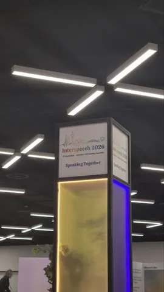
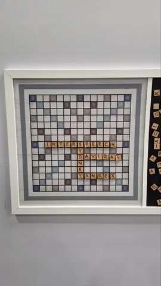
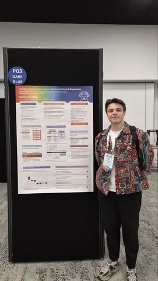
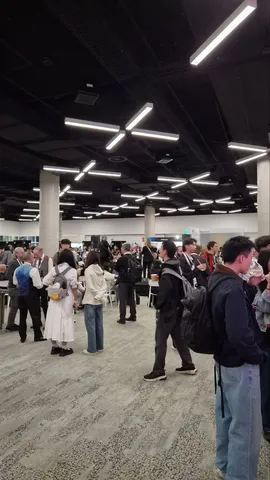
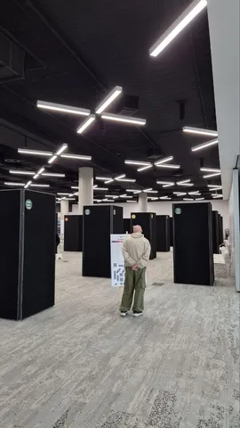

¡ɹǝpun uʍop ɯoɹɟ ʎɐp,ƃ
Ой..
То есть, привет из Австралии, где в эти дни, вплоть до 1 октября, проходит конференция Interspeech — о речевых технологиях и обо всём, что рядом. Мы, разумеется, на месте и будем рассказывать о самом интересном, что увидим (подписывайтесь на канал Speech Info, чтобы точно ничего не пропустить). А первыми впечатлениями поделился разработчик из службы технологий голосового ввода Яндекса Николай Коновальчук.
Если говорить о конференции в целом, то у участников тут есть две основных модели поведения. Есть условные Eleven Labs и Google, которые пытаются нанимать людей — мне буквально всучили мерч в обмен на контакты. С другой стороны, есть люди, которые пытаются что-то продать: либо услуги по разметке данных, либо готовые датасеты. Представители таких компаний очень активны. Один человек подошёл ко мне на афтерпати и завёл разговор только для того, чтобы предложить свои услуги; другой человек сперва спрашивал меня о постере, а потом выдал мерча и попытался продать свои услуги. И это только те, кто сами подходили. А в общем, тут, наверное, больше половины участников что-то продают.
Что касается постеров, то, разумеется, всего увидеть мне пока не удалось. Кое-что любопытное, к сожалению, посмотреть не сумел, потому что стоял у нашего постера, но сегодня были интересные вещи. На оралах об использовании моделей в ограниченных условиях тоже было довольно интересно.
Вообще, прикольно. Люди приветливые, кормят нормально.
О каком же постере говорит Николай? А вот о каком — Scalable Keyword Spotting via Modular Network Expansion. Это статья о том, как дёшево, сердито и (совсем) без потерь расширить словарь детектора ключевых фраз. Подробнее о методе мы писали вот тут.
Не переключайтесь — впереди ещё много интересного с Interspeech!
#YaInterspeech26
ML Underhood




